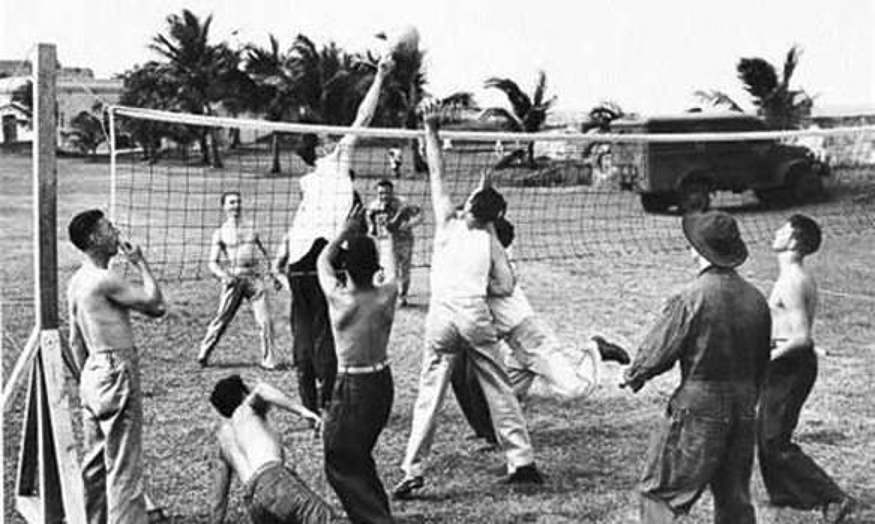
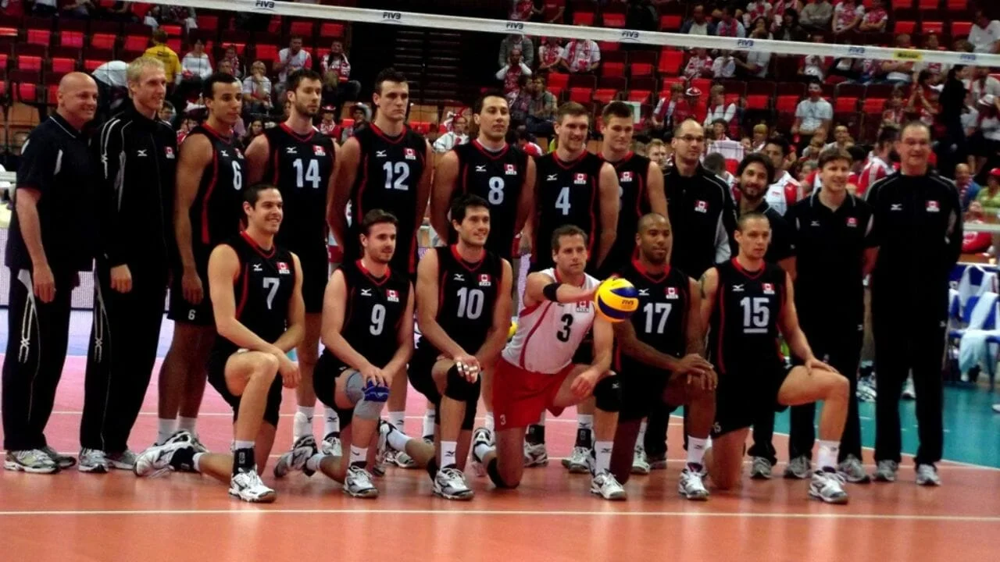
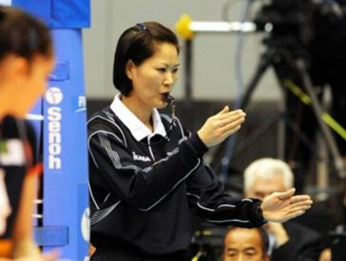
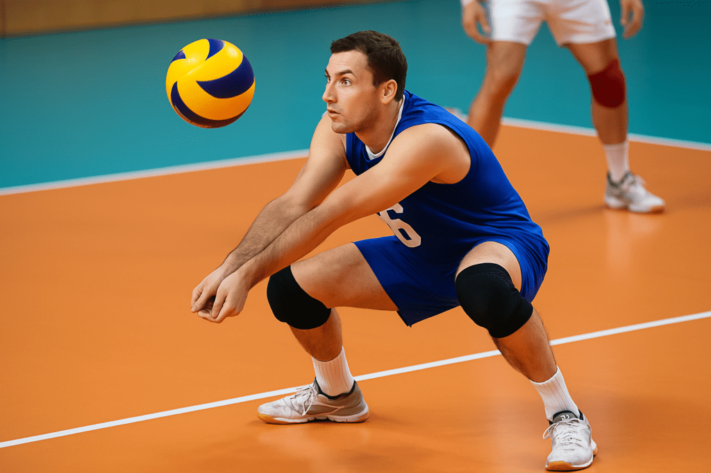
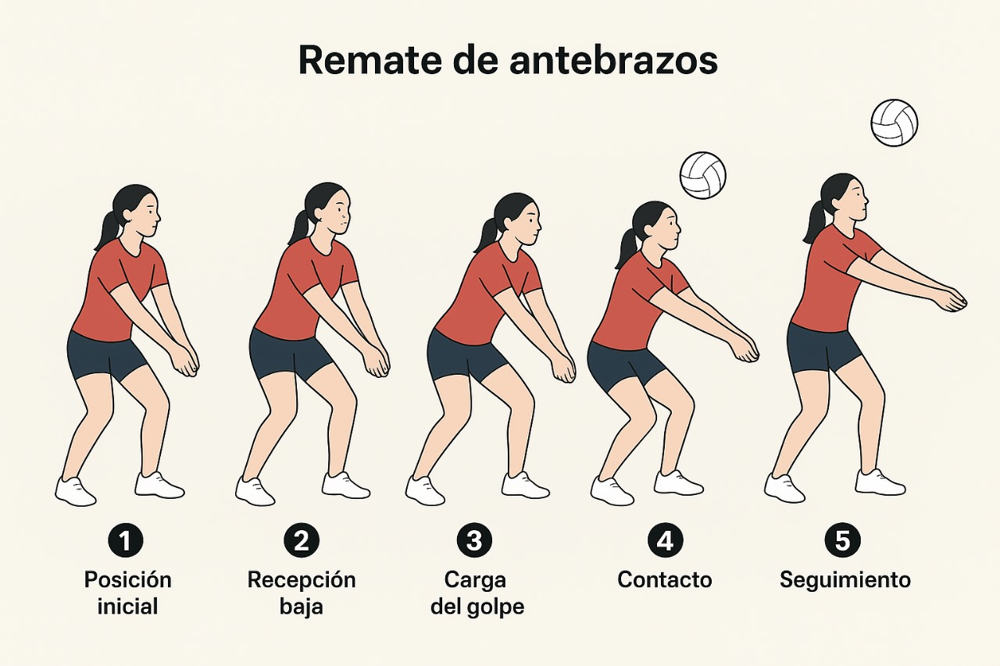
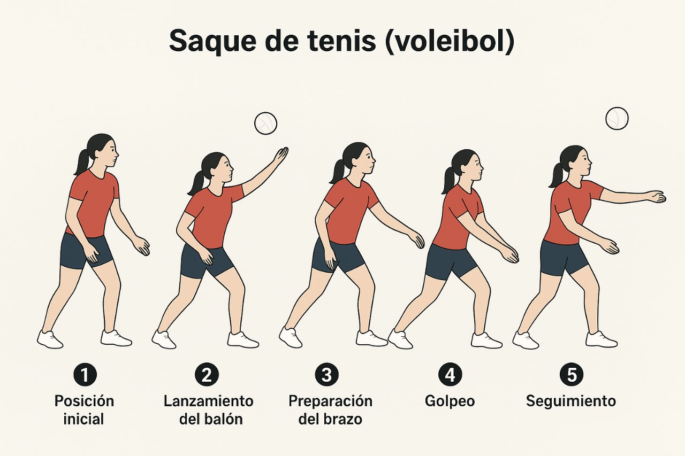
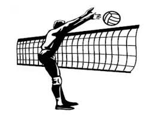
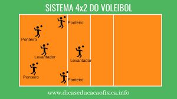

Historia del Voleibol

El voleibol nació el 9 de febrero de 1895 en Holyoke, Massachusetts (EE. UU.), gracias a William George Morgan, un profesor de educación física que trabajaba en la YMCA (Asociación Cristiana de Jóvenes). Morgan buscaba crear un deporte que combinara actividad física, trabajo en equipo y entretenimiento, pero que no implicara tanto contacto físico como el baloncesto, recientemente inventado por su amigo James Naismith.
Morgan llamó inicialmente a su juego “Mintonette”, inspirado en el bádminton. Las primeras reglas establecían una cancha de 15 x 7,5 metros, una red a una altura de 1,98 m y un número ilimitado de jugadores. En 1896, durante una demostración en Springfield College, el profesor Alfred Halstead observó cómo el balón se “voleaba” constantemente de un lado a otro de la red, y sugirió el nombre “volleyball” (voleibol).
Con el paso del tiempo, el deporte se fue expandiendo por el mundo gracias a la YMCA y las universidades estadounidenses. Llegó a Canadá en 1900, a Asia en 1908 (principalmente a Japón y Filipinas), y en la década de 1910 ya era popular en América del Sur y Europa.
En 1947, tras la Segunda Guerra Mundial, se fundó en París la Federación Internacional de Voleibol (FIVB), con 14 países miembros. Este fue un paso clave para unificar las reglas y promover torneos internacionales. Un año después se celebró el primer Campeonato Mundial masculino, y en 1952 el primero femenino.

El voleibol fue incorporado oficialmente al programa de los Juegos Olímpicos de Tokio 1964, con grandes potencias como la Unión Soviética, Japón y Polonia dominando las primeras décadas. Posteriormente, países como Brasil, Estados Unidos, Italia y China se convirtieron en referentes mundiales.
En 1996, en Atlanta, debutó la modalidad de voleibol de playa, la cual rápidamente ganó popularidad gracias a su estilo dinámico y ambiente playero. Desde entonces, el voleibol (en ambas modalidades) ha seguido creciendo, con más de 200 federaciones nacionales afiliadas a la FIVB.

Hoy en día, el voleibol es uno de los deportes más practicados del mundo, tanto a nivel recreativo como profesional. Su combinación de técnica, estrategia y espíritu de equipo lo convierte en una disciplina apasionante que promueve la cooperación, la rapidez mental y el respeto entre jugadores.
“El voleibol no solo es un deporte: es una escuela de trabajo en equipo, esfuerzo y superación.”
Capítulo 1: Instalaciones y Equipamiento
El área de juego del voleibol mide 18 metros de largo por 9 metros de ancho. Está dividida por una línea central que separa las dos zonas de equipo. Alrededor debe existir una zona libre de al menos 3 metros, y un espacio libre superior de 7 metros como mínimo.
En competiciones internacionales, la zona libre lateral debe ser de 5 metros y la zona de fondo de 8 metros. La superficie debe ser uniforme, plana y libre de obstáculos. El color del piso debe ser diferente entre la zona de juego y la zona libre.
La red mide 1 metro de ancho y su altura varía: 2.43 m para hombres y 2.24 m para mujeres. Los postes se ubican a 0.5 – 1 metro fuera de las líneas laterales y no deben presentar elementos peligrosos.
El balón debe ser esférico, de material flexible, con una circunferencia de 65–67 cm y un peso entre 260–280 g. La presión interior debe ser de 0.3–0.325 kg/cm². En competiciones internacionales, todos los balones utilizados deben ser del mismo tipo, color y marca.

Capítulo 2: Participantes
Cada equipo está formado por un máximo de 12 jugadores, un entrenador, un asistente, un fisioterapeuta y un médico. Durante un partido, solo seis jugadores se encuentran en el campo, tres en la zona delantera y tres en la zaguera.
El capitán del equipo es el representante en el terreno. Participa en el sorteo inicial y puede dirigirse al árbitro para solicitar aclaraciones. Además, debe mantener el orden y la disciplina dentro del grupo.
El entrenador tiene la responsabilidad táctica del equipo, decide las formaciones y realiza las sustituciones. Puede comunicarse con sus jugadores durante el juego sin interrumpirlo.
Los uniformes deben ser iguales en diseño y color, con números visibles en el pecho y espalda (del 1 al 20). El líbero usa un uniforme diferente para ser identificado fácilmente.
Capítulo 3: Formato de Juego
El partido de voleibol se disputa al mejor de cinco sets. Los primeros cuatro se juegan a 25 puntos y el quinto (de desempate) a 15 puntos, con una diferencia mínima de dos puntos para ganar el set.
Cada acción del juego produce un punto, independientemente de quién haya sacado. Esto se conoce como el sistema de punto por jugada (Rally Point System).
Al inicio del partido, se realiza un sorteo que determina qué equipo saca y qué lado ocupará. Los equipos cambian de campo en cada set y, en el quinto set, cuando uno de los equipos alcanza 8 puntos.
Las posiciones de los jugadores deben respetarse según el orden de rotación. Cuando un equipo gana el derecho al saque, rota un lugar en el sentido de las agujas del reloj.

Capítulo 4: Acciones de Juego
El balón puede ser tocado o impulsado con cualquier parte del cuerpo, siempre que el contacto sea limpio. Cada equipo dispone de tres toques para devolver el balón al campo contrario.
Las principales acciones de juego son:
- Saque: Inicia la jugada. El jugador debe golpear el balón desde detrás de la línea de fondo.
- Recepción: Primer contacto, destinado a controlar el saque contrario.
- Pase o colocación: Segundo toque, que prepara el ataque.
- Ataque o remate: Tercer toque, con intención de anotar un punto.
- Bloqueo: Acción defensiva cerca de la red para detener el ataque rival.
El balón está “dentro” si toca el suelo o la línea del campo rival, y “fuera” si cae completamente fuera. No se permite retener, lanzar ni acompañar el balón.

Capítulo 5: Interrupciones e Intervalos
Cada equipo puede solicitar hasta dos tiempos de descanso y seis sustituciones por set. Las interrupciones se utilizan estratégicamente para recuperar energía o ajustar tácticas.
Las sustituciones deben ser rápidas y realizadas en la zona designada frente al anotador. Si un jugador se lesiona y no puede continuar, puede ser reemplazado permanentemente.
Los intervalos entre sets duran tres minutos, durante los cuales los equipos cambian de lado y el árbitro verifica las alineaciones.
Capítulo 6: El Jugador Líbero
El líbero es un jugador especializado en defensa que no puede atacar, sacar ni bloquear. Su función es mejorar la recepción y la defensa del equipo.
Usa un uniforme de color distinto para ser identificado fácilmente. Puede entrar y salir del campo libremente, pero solo en sustitución de un jugador zaguero.
El líbero no puede completar un golpe de ataque si el balón se encuentra por encima del borde superior de la red. Tampoco puede realizar un pase de dedos desde la zona delantera si otro jugador ataca el balón por encima de la red.
Capítulo 7: Conducta de los Participantes
Todos los participantes deben comportarse de manera respetuosa y deportiva. Se espera autocontrol, espíritu de equipo y respeto hacia los árbitros y adversarios.
Las conductas incorrectas se clasifican en:
- Menores: gestos o palabras de desacuerdo sin mala intención (advertencia verbal).
- Sancionables: actitudes irrespetuosas, provocaciones o discusiones (tarjeta amarilla o roja).
- Graves: agresiones verbales o físicas, que pueden llevar a la descalificación del jugador.
La FIVB promueve valores como la cortesía, la honestidad y el juego limpio en todas las competiciones oficiales.

Capítulo 8: Árbitros y Señales
El cuerpo arbitral está formado por:
- Primer árbitro: dirige el partido desde una plataforma elevada. Tiene autoridad sobre todas las decisiones.
- Segundo árbitro: controla las sustituciones, tiempos y la zona de red.
- Anotador: registra los puntos, rotaciones y sanciones.
- Jueces de línea: observan las líneas laterales y de fondo, indicando si el balón está dentro o fuera.
Los árbitros utilizan un sistema de señales manuales universales para comunicar decisiones: indicaciones de punto, faltas, rotaciones y sustituciones.
Su labor es esencial para mantener la imparcialidad y el orden del juego, aplicando el reglamento de forma coherente y justa.

Progresion de gesto
1. Pase de dedos (Voleibol)

Progresión del gesto:
- Postura base: pies separados, rodillas semiflexionadas, manos frente al rostro.
- Colocación de manos: forma un triángulo con los dedos pulgares e índices.
- Contacto del balón: recibe el balón sobre la frente con las yemas de los dedos.
- Extensión simultánea: empuja con piernas, brazos y muñecas al mismo tiempo.
- Seguimiento (finish): brazos se extienden completamente y la mirada sigue el balón.
2. Remate de antebrazos (Voleibol)
Progresión del gesto:
- Posición inicial: pies separados, rodillas flexionadas, manos unidas formando plataforma.
- Recepción baja: brazos extendidos, hombros hacia adelante.
- Carga del golpe: leve impulso de piernas hacia arriba y adelante.
- Contacto: golpea el balón con la parte interna de los antebrazos, justo delante del cuerpo.
- Finalización: mantiene la plataforma firme y acompaña ligeramente la dirección del balón.
3. Saque de tenis
Progresión del gesto:
- Posición inicial: pies alineados, cuerpo relajado, pelota en la mano no dominante.
- Lanzamiento (toss): lanza la pelota al frente y un poco arriba del cuerpo.
- Preparación del brazo: el brazo dominante baja y luego sube en arco, como un látigo.
- Extensión y contacto: estira piernas y brazo para golpear la pelota en el punto más alto.
- Seguimiento: deja que el brazo caiga cruzando el cuerpo tras el impacto.
4. Remate (Voleibol)
Progresión del gesto:
- Carrera de aproximación: pasos rítmicos (izq-der-izq para diestros).
- Impulso: flexión de rodillas y balance de brazos hacia atrás.
- Salto: extensión rápida de piernas y brazos hacia arriba.
- Armado del brazo: brazo de golpe atrás, codo alto, mano abierta.
- Golpeo: contacto con la pelota arriba y delante del cuerpo, muñeca se flexiona hacia abajo.
- Caída controlada: aterriza con ambos pies y mantiene el equilibrio.
Progresión Técnica del Bloqueo en Voleibol
Sección: Sistemas de juego completos para voleibol.
El bloqueo es un gesto técnico, táctico y perceptivo. Su progresión debe entrenar salto, lectura del atacante, desplazamientos y sincronización con compañeros.
FASE 1: Fundamentos sin red
- Postura base: pies abiertos, rodillas semiflexionadas, manos altas.
- Ejercicios: postura estática, cambios de peso, saltos sin brazos.
FASE 2: Salto + acción de brazos
- Coordinación brazos–piernas.
- Extensión máxima con manos firmes.
- Caída controlada.
FASE 3: Bloqueo individual en la red
- Tocar red sin saltar.
- Saltar pegado a la red.
- Penetrar manos al campo rival.
FASE 4: Desplazamientos del bloqueo
- Paso lateral.
- Paso cruzado.
- Cierre del bloqueo del central.
FASE 5: Bloqueo con estímulo
- Entrenador lanza balón → jugador bloquea.
- Globo avisado/no avisado.
- Objetivo: timing + penetración.
FASE 6: Lectura del atacante
- Leer carrera, hombro y salto del atacante.
- Ajustar salto según trayectoria.
FASE 7: Bloqueo doble y triple
- Mano externa tapa línea.
- Mano interna tapa diagonal.
- Cerrar brechas entre bloqueadores.
FASE 8: Sistema bloqueo–defensa
- Defensores se colocan según bloqueo.
- Situaciones reales de ataque.
FASE 9: Bloqueo en juego real
- Decidir bloquear, fintar o amagar.
- Leer al colocador y atacante principal.
- 6 vs 6 con prioridad de bloqueo.
Errores comunes y soluciones
| Error | Corrección |
|---|---|
| Saltar tarde/temprano | Observar hombro del atacante |
| Manos sin penetrar | Ejercicios de “meter hombros” |
| Dedos blandos | Fortalecimiento de manos |
| Desplazamiento alto | Bajar centro de gravedad |
| Huecos en bloqueo doble | Trabajo con bandas/cuerdas |
Sección: Progresión completa del bloqueo desde iniciación hasta avanzado.
Sistemas de Juego en Voleibol
Los sistemas de juego organizan el orden, funciones y tácticas del equipo durante el partido. Un sistema define cómo se rota, cómo se ataca, cómo se defiende y el rol de cada jugador.
¿Qué incluye un sistema de juego?
- Sistema de colocación (1, 2 o 3 colocadores).
- Sistema de ataque (quiénes atacan y desde dónde).
- Sistema defensivo (bloqueo + defensa del campo).
- Sistemas de transición defensa–ataque y recepción–ataque.
- Rol del líbero en cada rotación.
🔹 Sistema 4–2 (4 atacantes – 2 colocadores)
Descripción: dos colocadores que se alternan según la zona donde están.
- Ventajas: simple, ideal para principiantes.
- Desventajas: poca variedad ofensiva y potencia reducida. 
🔹 Sistema 6–2 (6 atacantes – 2 colocadores zagueros)
Descripción: los colocadores solo levantan desde zona zaguera.
- Ventajas: siempre 3 atacantes delanteros → ataque poderoso.
- Desventajas: requiere jugadores polivalentes.
🔹 Sistema 5–1 (5 atacantes – 1 colocador)
Sistema más utilizado en voleibol profesional.
- Ventajas: coherencia táctica, gran variedad de ataques.
- Desventajas: cuando el colocador está adelante solo hay 2 atacantes delanteros.
Sistemas de ataque
- Ataque clásico de puntas.
- Ataque con opuesto dominante.
- Combinaciones rápidas (31, 7, flotante, doble primer tiempo, pipe, china).
Sistemas defensivos
- Defensa perímetro (profunda).
- Defensa en U (cerrada).
- Defensa rotacional.
- Defensa hombre a hombre en bloqueo.

Roles y posiciones
- Colocador: cerebro del equipo.
- Centrales: bloqueo + ataque rápido.
- Puntas: recepción y ataque.
- Opuesto: atacante principal.
- Líbero: defensa y recepción.
¿Qué sistema usar según el nivel?
| Nivel | Sistema | Motivo |
|---|---|---|
| Iniciación | 4–2 | Simple y claro |
| Intermedio | 6–2 | Ataque fuerte |
| Avanzado | 5–1 | Control táctico |
| Profesional | 5–1 + líbero | Estandar internacional |
Planillaje en Voleibol
El planillaje es el registro oficial de todo lo que sucede en un partido de voleibol. Su objetivo es llevar un control detallado del desarrollo del juego: las rotaciones, los puntos, los saques, los cambios y las faltas. Este registro lo realiza una persona designada como anotador o planillero.
Funciones principales del planillero
- Registrar el equipo titular y suplente antes de iniciar el set.
- Verificar el orden de rotación según la planilla entregada por el entrenador.
- Anotar los puntos logrados por cada equipo.
- Registrar los saques: quién saca y si el punto fue ganado o perdido.
- Controlar sustituciones y tiempos pedidos por los entrenadores.
- Registrar sanciones (amonestaciones, expulsiones, etc.).
- Confirmar el resultado final de cada set y del partido.
Elementos que contiene una planilla
- Nombre de los equipos.
- Categoría o torneo.
- Número de set.
- Fecha y hora del partido.
- Nombres de árbitros y anotador.
- Orden de rotación inicial de cada equipo.
- Espacios para registrar:
- Puntos.
- Saques.
- Cambios.
- Tiempos solicitados.
- Resultado final.
Importancia del planillaje
El planillaje garantiza un registro oficial y verificable del partido. Ayuda a los árbitros y entrenadores a mantener el control sobre las rotaciones, sustituciones, tiempos y sanciones, evitando errores y confusiones durante el juego.
Además, en competencias y torneos oficiales, las planillas sirven como documento de evidencia para validar resultados y revisar situaciones de juego controvertidas.
Sección informativa sobre el planillaje oficial en voleibol.